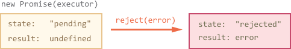

Promise
Imagine that you’re a top singer, and fans ask day and night for your upcoming single.
To get some relief, you promise to send it to them when it’s published. You give your fans a list to which they can subscribe for updates. They can fill in their email addresses, so that when the song becomes available, all subscribed parties instantly receive it. And even if something goes very wrong, say, if plans to publish the song are cancelled, they will still be notified.
Everyone is happy, because the people don’t crowd you any more, and fans, because they won’t miss the single. This is a real-life analogy for things we often have in programming:
- A “producing code” that does something and takes time. For instance, the code loads a remote script. That’s a “singer”.
- A “consuming code” that wants the result of the “producing code” once it’s ready. Many functions may need that result. These are the “fans”.
- A promise is a special JavaScript object that links the “producing code” and the “consuming code” together. In terms of our analogy: this is the “subscription list”. The “producing code” takes whatever time it needs to produce the promised result, and the “promise” makes that result available to all of the subscribed code when it’s ready.
The analogy isn’t terribly accurate, because JavaScript promises are more complex than a simple subscription list: they have additional features and limitations. But it’s fine to begin with.
The constructor syntax for a promise object is:
let promise = new Promise(function(resolve, reject) {
// executor (the producing code, "singer")
});
The function passed to new Promise is called the Executor. When the promise is created, this executor function runs automatically. It contains the producing code, that should eventually produce a result. In terms of the analogy above: the executor is the “singer”.
The resulting promise object has internal properties:
state— initially “pending”, then changes to either “fulfilled” or “rejected”,result— an arbitrary value of your choosing, initiallyundefined.
When the executor finishes the job, it should call one of the functions that it gets as arguments:
-
resolve(value) — to indicate that the job finished successfully:- sets
stateto "fulfilled", - sets
resulttovalue.
- sets
-
reject(error) — to indicate that an error occurred:- sets
stateto "rejected", - sets
resulttoerror.
- sets

Later we’ll see how these changes become known to “fans”.
Here’s an example of a Promise constructor and a simple executor function with its “producing code” (the setTimeout):
let promise = new Promise(function(resolve, reject) {
// the function is executed automatically when the promise is constructed
// after 1 second signal that the job is done with the result "done!"
setTimeout(() => resolve("done!"), 1000);
});
We can see two things by running the code above:
- The executor is called automatically and immediately (by the
new Promise). - The executor receives two arguments:
resolveandreject— these functions are pre-defined by the JavaScript engine. So we don’t need to create them. Instead, we should write the executor to call them when ready.
After one second of “processing” the executor calls resolve("done") to produce the result:

That was an example of a successful job completion, a “fulfilled promise”. And now an example of the executor rejecting the promise with an error:
let promise = new Promise(function(resolve, reject) {
// after 1 second signal that the job is finished with an error
setTimeout(() => reject(new Error("Whoops!")), 1000);
});

To summarize, the executor should do a job (something that takes time usually) and then call resolve or reject to change the state of the corresponding Promise object.
The Promise that is either resolved or rejected is called “Settled”, as opposed to a “Pending” Promise.
There can be only a single result or an error
The executor should call only one resolve or reject. The promise’s state change is final. All further calls of resolve and reject are ignored:
let promise = new Promise(function(resolve, reject) {
resolve("done");
reject(new Error("…")); // ignored
setTimeout(() => resolve("…")); // ignored
});
Reject with Error objects
In case if something goes wrong, we can call reject with any type of argument (just like resolve). But it is recommended to use Error objects (or objects that inherit from Error). The reasoning for that will soon become apparent.
Immediately calling resolve/reject
In practice, an executor usually does something asynchronously and calls resolve/reject after some time, but it doesn’t have to. We also can call resolve or reject immediately, like this:
let promise = new Promise(function(resolve, reject) {
// not taking our time to do the job
resolve(123); // immediately give the result: 123
});
For instance, this might happen when we start to do a job but then see that everything has already been completed. That’s fine. We immediately have a resolved Promise, nothing wrong with that.
The state and result are internal
The properties state and result of the Promise object are internal. We can’t directly access them from our “consuming code”. We can use the methods .then/.catch for that. They are described below.
Consumers: “then” and “catch”
A Promise object serves as a link between the executor (the “producing code” or “singer”) and the consuming functions (the “fans”), which will receive the result or error. Consuming functions can be registered (subscribed) using the methods .then and .catch.
The syntax of .then is:
promise.then(
function(result) { /* handle a successful result */ },
function(error) { /* handle an error */ }
);
The first argument of .then is a function that:
- runs when the Promise is resolved, and
- receives the result.
The second argument of .then is a function that:
- runs when the Promise is rejected, and
- receives the error.
For instance, here’s the reaction to a successfuly resolved promise:
let promise = new Promise(function(resolve, reject) {
setTimeout(() => resolve("done!"), 1000);
});
// resolve runs the first function in .then
promise.then(
result => alert(result), // shows "done!" after 1 second
error => alert(error) // doesn't run
);
The first function was executed. And in the case of a rejection – the second one:
let promise = new Promise(function(resolve, reject) {
setTimeout(() => reject(new Error("Whoops!")), 1000);
});
// reject runs the second function in .then
promise.then(
result => alert(result), // doesn't run
error => alert(error) // shows "Error: Whoops!" after 1 second
);
If we’re interested only in successful completions, then we can provide only one function argument to .then:
let promise = new Promise(resolve => {
setTimeout(() => resolve("done!"), 1000);
});
promise.then(alert); // shows "done!" after 1 second
If we’re interested only in errors, then we can use null as the first argument: .then(null, errorHandlingFunction). Or we can use .catch(errorHandlingFunction), which is exactly the same:
let promise = new Promise((resolve, reject) => {
setTimeout(() => reject(new Error("Whoops!")), 1000);
});
// .catch(f) is the same as promise.then(null, f)
promise.catch(alert); // shows "Error: Whoops!" after 1 second
The call .catch(f) is a complete analog of .then(null, f), it’s just a shorthand.
On settled promises then runs immediately
If a promise is pending, .then/catch handlers wait for the result. Otherwise, if a promise has already settled, they execute immediately:
Handlers of .then/.catch are always asynchronous
Even when the Promise is immediately resolved, code which occurs on lines below your .then/.catch may still execute first. The JavaScript engine has an internal execution queue which gets all .then/catch handlers. But it only looks into that queue when the current execution is finished.
In other words, .then/catch handlers are pending execution until the engine is done with the current code.
// an "immediately" resolved Promise
const executor = resolve => resolve("done!");
const promise = new Promise(executor);
promise.then(alert); // this alert shows last (*)
alert("code finished"); // this alert shows first
The promise becomes settled immediately, but the engine first finishes the current code, calls alert, and only afterwards looks into the queue to run .then handler.
So the code after .then ends up always running before the Promise’s subscribers, even in the case of an immediately-resolved Promise.
Usually that’s unimportant, but in some scenarios the order may matter a great deal.
Next, let’s see more practical examples of how promises can help us to write asynchronous code.
Example: loadScript
We’ve got the loadScript function for loading a script from the previous chapter. Here’s the callback-based variant, just to remind us of it:
function loadScript(src, callback) {
let script = document.createElement('script');
script.src = src;
script.onload = () => callback(null, script);
script.onerror = () => callback(new Error(`Script load error ` + src));
document.head.append(script);
}
Let’s rewrite it using Promises. The new function loadScript will not require a callback. Instead, it will create and return a Promise object that resolves when the loading is complete. The outer code can add handlers (subscribing functions) to it using .then:
function loadScript(src) {
return new Promise(function(resolve, reject) {
let script = document.createElement('script');
script.src = src;
script.onload = () => resolve(script);
script.onerror = () => reject(new Error("Script load error: " + src));
document.head.append(script);
});
}
Usage:
let promise = loadScript("https://cdnjs.cloudflare.com/ajax/libs/lodash.js/3.2.0/lodash.js");
promise.then(
script => alert(`${script.src} is loaded!`),
error => alert(`Error: ${error.message}`)
);
promise.then(script => alert('One more handler to do something else!'));
We can immediately see a few benefits over the callback-based pattern:
- Promises allow us to do things in the natural order. First, we run
loadScript, and.thenwe write what to do with the result. - We can call
.thenon a Promise as many times as we want. Each time, we’re adding a new “fan”, a new subscribing function, to the “subscription list”. More about this in the next section: Promise Chaining.